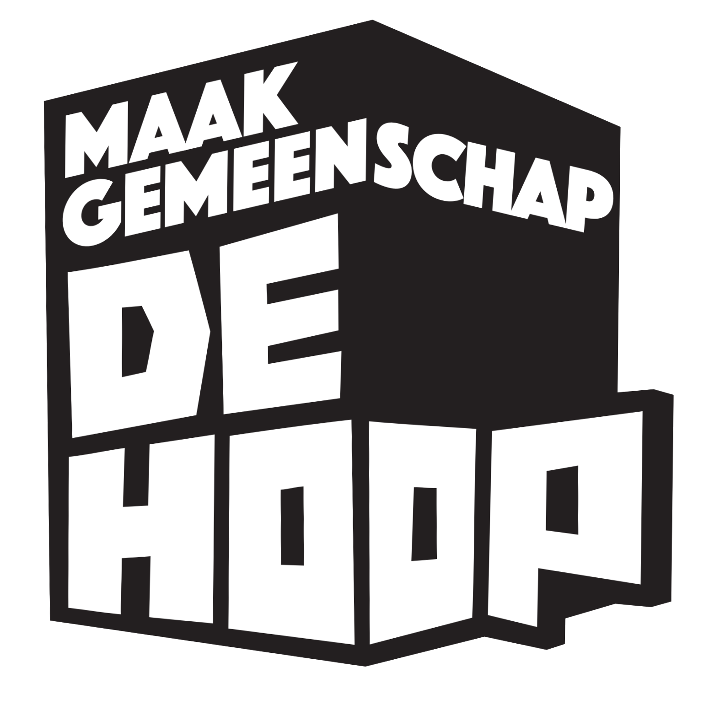

Maakgemeenschap De Hoop
Aan de industriële rafelrand van Zaanstad ontstond in 2019 MAAKgemeenschap De Hoop, een atelierdorp in een voormalige kartonfabriek.
In het imposante gebouw van 10.000 m² huizen inmiddels 170 creatieve ateliers en werkplaatsen waar ruim 330 kunstenaars, makers en ambachtslieden actief zijn.
Onder beheer van de Crealisatie Coöperatie groeide De Hoop uit tot een levendige broedplaats met een rijk aanbod aan gemeenschappelijke werkplaatsen en voorzieningen: een houtwerkplaats, metaalwerkplaats, keramiekwerkplaats, kookwerkplaats, grafische werkplaats met zeefdrukfaciliteit, een bar en podiumruimte, community-keuken en vergaderruimtes.
De filosofie van Crealisatie krijgt hier tastbare vorm: een dynamisch netwerk van faciliteiten en initiatieven waar kunstenaars en ambachtslieden elkaar vinden, uitdagen en samen nieuwe mogelijkheden creëren.
